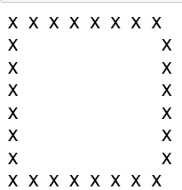
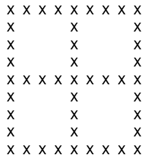
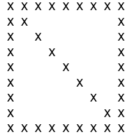
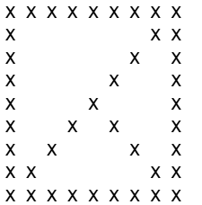
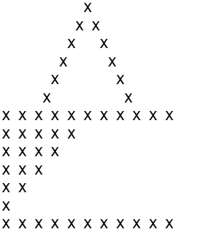
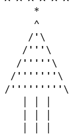
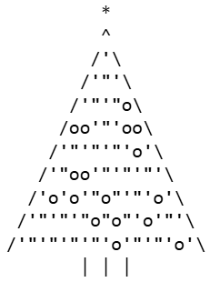

ASCII art
1. Un carré en ASCII Art
Voici la fonction d'un carré
def carre(taille:int):
"""fonction qui prend en valeur la taille de coté et affiche le carré"""
assert taille >= 2, "La taille doit être au moins 2"
ligne1 = taille * "X " #premierre ligne
print(ligne1.rstrip())
for i in range(taille-2): #lignes du milieu
ligne = "X " + " " * (2 * taille - 3) + "X " #calcul d'espace libre
print(ligne.rstrip())
print(ligne1.rstrip()) #dernierre ligne
Le resultat:

2. D’autres formes
Croix dans un carré:
def croix_carre(cote:int):
"""Affiche un carré avec une croix centrée à l'intérieur."""
assert cote % 2 != 0, "La taille doit être impaire pour une croix centrée"
centre = cote // 2
for l in range(cote):
ligne = ""
for c in range(cote):
if l == 0 or l == cote-1 or c == 0 or c == cote-1 or l == centre or c == centre:
ligne += "X "
else:
ligne += " "
print(ligne.rstrip())

Diagonale descendante:
def diagonale(cote:int):
"""Affiche un carré avec une diagonale descendante."""
for l in range(cote):
ligne = ""
for c in range(cote):
if l == 0 or l == cote - 1 or c == 0 or c == cote - 1 or l == c:
ligne += "X "
else:
ligne += " "
print(ligne)

Origami
def origami(n):
assert n % 2 != 0, "Votre valeur doit etre impaire"
centre = n // 2
for l in range(n):
ligne = ""
for c in range(n):
if l == 0 or l == n-1 or c == 0 or c == n-1 :
ligne += "X "
elif c == n - 1 - l:
ligne += "X "
elif l == c and l >= centre and c >= centre:
ligne += "X "
else:
ligne += " "
print(ligne)

Triangle
def triangle(taille :int):
"""fonction qui prend en valeur la taille de coté et affiche le triangle avec espace a l'interieur"""
for i in range(taille//2 + 1):
ligne = " " * (taille - i - 1)
for j in range(2 * i + 1):
if j == 0 or j == 2 * i or i == taille - 1:
ligne += "X"
else:
ligne += " "
print(ligne.rstrip())
Triangle inversé
def triangle_inverse(taille :int):
""" fonction qui prend en valuer la taille de coté et affiche le triangle inversé """
ligne1 = "X " * taille #premierre ligne
print(ligne1.rstrip())
for i in range(taille//2 ):
ligne = " " * (2 * i + 1)
for j in range(taille//2 - i):
ligne = "X " + ligne
print(ligne.rstrip())
print(ligne1.rstrip())

C'est dur les triangles :(
3. Sapin de Noël
2 types de sapin:
1 - Sapin sans random
def sapin(taille:int):
espaces = " " * (taille // 2)
print(espaces + "*") #etoile du sapin
print(espaces + "^") # sommet du sapin
for i in range(taille//2):
espaces = " " * (taille // 2 - i - 1)
print(espaces + "/" + "'" * (2 * i + 1) + "\\") # corps du sapin
for tronc in range(3): # tronc du sapin
espace = " " * (taille // 2 - 2)
print(espace + "| | |")

Sapin avec random
import random
def sapin1(taille):
# Étoile
print(' ' * (taille - 1) + '*')
# Feuillage
for i in range(taille):
espaces = ' ' * (taille - i - 1)
if i == 0:
print(espaces + '^' + espaces)
else:
ligne = ''
for j in range(2*i - 1):
r = random.random()
if r < 0.2: # 20% de chance
ligne += 'o'
else:
ligne += "'" if j % 2 == 0 else '"'
print(espaces + '/' + ligne + '\\' + espaces)
# Tronc
espace = " " * (taille // 2 + 2 )
print(espace + "| | |")
